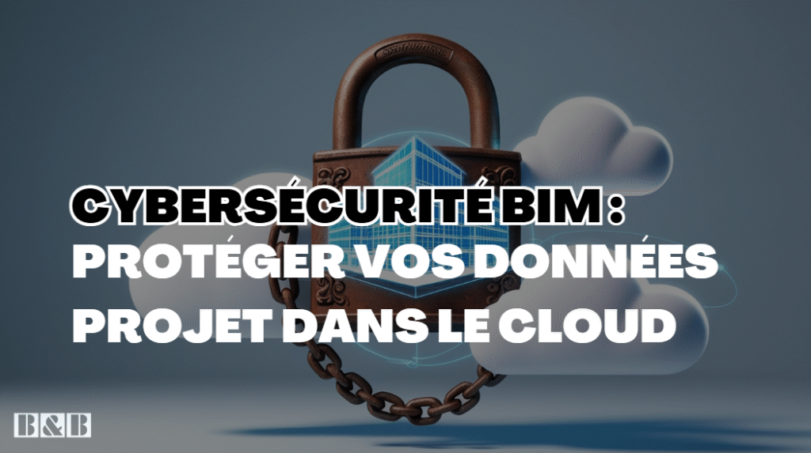

Inside a Data Center
A visual guide to understanding, designing, and speaking the language of data centers. Free 9-page preview, no strings attached.
Get the free previewCybersécurité et BIM : Protéger Vos Données Projet dans le Cloud (Risques & Bonnes Pratiques)
Le BIM associé au Cloud a indéniablement transformé nos méthodes de travail dans l’AEC, boostant la collaboration et l’accès à l’information. Mais cette médaille a un revers : l’hyper-connectivité et la centralisation des données sur des plateformes en ligne créent une surface d’attaque élargie pour les cybermenaces. Vos modèles BIM, riches en propriété intellectuelle, données techniques sensibles et informations financières, deviennent des cibles de choix.

Sous-estimer les risques liés à la cybersécurité BIM n’est plus une option. Une faille peut avoir des conséquences dévastatrices, allant du vol de données à la paralysie complète d’un projet, en passant par des atteintes à la réputation et des responsabilités légales. Cet article vise à vous sensibiliser aux enjeux cruciaux de la protection de vos données BIM dans le cloud, à identifier les menaces spécifiques et à vous présenter les bonnes pratiques et les cadres normatifs essentiels, comme l’ISO 19650-5 ou la qualification SecNumCloud.
Pourquoi la Cybersécurité est Cruciale pour Vos Projets BIM dans le Cloud ?
La nature même des données BIM les rend particulièrement précieuses et donc vulnérables :
- Propriété Intellectuelle : Conceptions architecturales uniques, innovations techniques, détails constructifs spécifiques…
- Données Techniques Sensibles : Calculs structurels, plans d’exécution détaillés, données de performance…
- Informations Financières : Estimations de coûts, offres de prix, détails des marchés…
- Données Stratégiques : Planning détaillé du projet, phasage des opérations…
- Données Personnelles : Noms dans les cartouches, informations dans les comptes utilisateurs liés aux licences logicielles (ex: compte Autodesk)…
La collaboration étendue via le cloud multiplie les points d’entrée potentiels pour les attaquants (accès distants, multiples intervenants, failles des plateformes…). Les conséquences d’une cyberattaque réussie peuvent être catastrophiques :
- Vol de données et Espionnage industriel : Perte d’avantage concurrentiel, fuite d’informations sensibles vers des compétiteurs.
- Corruption ou Destruction de données : Des heures, voire des semaines de travail perdues, retards critiques sur le projet.
- Ransomware (Rançongiciel) : Vos modèles et données pris en otage, projet bloqué jusqu’au paiement (non recommandé !) d’une rançon.
- Atteinte Grave à la Réputation : Perte de confiance irréversible de vos clients et partenaires.
- Responsabilité Légale et Financière : Amendes pour non-conformité (RGPD), pénalités contractuelles pour retards ou fuites.
- Risques pour les Employés : Vol d’identité via les informations personnelles contenues dans les comptes logiciels compromis, possibilité d’arnaque ou de chantage ciblé.
Les Menaces Spécifiques au Contexte BIM & Cloud
Les attaquants adaptent leurs méthodes au contexte numérique de l’AEC :
Attaques Ciblant les Plateformes Cloud (CDE – Common Data Environment)
Votre CDE est le cœur de votre projet, c’est donc une cible privilégiée. Les risques incluent l’exploitation de mauvaises configurations de sécurité, de vulnérabilités non corrigées par l’éditeur, ou simplement une gestion laxiste des droits d’accès permettant à un utilisateur non autorisé de consulter ou modifier des données.
Phishing et Ingénierie Sociale
Les attaquants misent sur l’erreur humaine. Des emails de phishing très ciblés peuvent tenter de dérober les identifiants de connexion à votre CDE, à votre compte Autodesk, ou à votre VPN.
Un clic sur une pièce jointe ou un lien malveillant peut installer un malware qui espionnera votre activité ou chiffrera vos données.
Risques Liés aux Logiciels et Licences
L’utilisation de logiciels BIM piratés (“crackés”) est une porte d’entrée béante pour les malwares. Mais même les logiciels légitimes peuvent présenter des vulnérabilités s’ils ne sont pas mis à jour. De plus, la gestion des licences centralisée sur des comptes utilisateurs (comme Autodesk Account) crée un risque : ces comptes contiennent des données personnelles et contrôlent l’accès aux logiciels. Leur compromission peut entraîner un vol de licence ou une usurpation d’identité.
Transferts de Données Non Sécurisés : Le Danger Ignoré
Le partage rapide de fichiers via des services grand public comme WeTransfer, Dropbox personnel, ou des clés USB non chiffrées est une pratique courante mais extrêmement risquée pour des données de projet. Attention Cas Critique : Pour des projets hautement confidentiels (militaire, nucléaire, R&D industrielle sensible, données de santé dans les hôpitaux…), l’utilisation de ces canaux non sécurisés est une faute professionnelle grave aux conséquences potentiellement incalculables. Il faut impérativement utiliser des canaux de transfert chiffrés et approuvés.
Menaces Internes
Il ne faut pas négliger le risque venant de l’intérieur, qu’il soit par négligence (mauvaise manipulation, partage de mot de passe “pour dépanner”, clic sur un lien suspect) ou par malveillance (employé sur le départ ou mécontent qui exfiltre des données).
Cadres Normatifs et Bonnes Pratiques pour Sécuriser Vos Données
Heureusement, des solutions existent pour renforcer votre cybersécurité BIM.
ISO 19650-5 : Intégrer la Sécurité dès le Départ
La norme internationale ISO 19650, qui régit le management de l’information BIM, inclut une partie cruciale : la Partie 5, dédiée à l’approche orientée sécurité (“security-minded approach”). Elle préconise une gestion des risques sécurité tout au long du projet, la définition d’une politique de sécurité claire, la gestion des accès selon le principe du “besoin d’en connaître” (least privilege), et la protection spécifique des informations sensibles. Ces exigences doivent être intégrées dans votre convention BIM ou Plan d’Exécution BIM (BEP).
Choisir un Environnement Cloud (CDE) Sécurisé
Le choix de votre plateforme CDE est déterminant. Vérifiez ses certifications de sécurité (a minima ISO 27001, SOC 2). Focus France : La qualification SecNumCloud Décernée par l’ANSSI (Agence Nationale de la Sécurité des Systèmes d’Information), la qualification SecNumCloud atteste d’un très haut niveau d’exigence en matière de sécurité et de localisation des données pour les fournisseurs de services Cloud. Elle est fortement recommandée, voire obligatoire, pour les projets de l’administration française, des Opérateurs d’Importance Vitale (OIV), et pour tout projet manipulant des données particulièrement sensibles sur le territoire français. Renseignez-vous si votre CDE propose une offre qualifiée SecNumCloud. Au-delà des certifications, analysez les fonctionnalités de sécurité offertes : gestion fine des permissions, journalisation complète des accès (logs), authentification multifacteur (MFA), options de chiffrement…
Bonnes Pratiques Techniques Essentielles
- Gestion Stricte des Accès : Appliquez le principe du moindre privilège. Révoyez régulièrement les droits accordés.
- Authentification Multifacteur (MFA) : Activez-la systématiquement sur tous les comptes (CDE, email, licences logicielles, VPN…). C’est l’une des mesures les plus efficaces contre le vol d’identifiants.
- Chiffrement : Assurez-vous que les données sont chiffrées au repos sur les serveurs et pendant leur transfert (HTTPS, VPN sécurisé…).
- Mises à Jour Rigoureuses : Maintenez à jour vos systèmes d’exploitation, vos logiciels BIM, vos navigateurs et vos antivirus.
- Sauvegardes Fiables : Mettez en œuvre une stratégie de sauvegardes régulières (ex: règle du 3-2-1), stockées de manière sécurisée (hors ligne ou cloud distinct) et testez périodiquement leur restauration.
Bonnes Pratiques Organisationnelles et Humaines (Le Maillon Souvent Faible !)
- Sensibilisation et Formation Continues : Organisez des sessions régulières pour former vos équipes aux risques (reconnaître un email de phishing), aux bonnes pratiques (mots de passe, partage sécurisé) et aux procédures internes. L’humain est la première ligne de défense !
- Politique de Mots de Passe Robustes : Exigez des mots de passe longs, complexes, uniques par service, et encouragez l’utilisation de gestionnaires de mots de passe.
- Procédures Claires pour le Partage : Définissez les outils et méthodes approuvés pour le transfert de données internes et externes. Interdisez formellement les solutions non sécurisées pour les données sensibles.
- Plan de Réponse aux Incidents : Préparez un plan simple indiquant qui contacter et quelles sont les premières actions à mener en cas d’incident de sécurité suspecté.
Que Faire en Cas d’Incident ? (Arnaque, Chantage, Fuite…)
Si malgré tout un incident survient :
- Gardez votre calme et NE PAYEZ JAMAIS une rançon.
- Isolez immédiatement les machines ou systèmes potentiellement compromis du réseau pour limiter la propagation.
- Alertez sans tarder votre responsable sécurité (RSSI/DSI) ou votre prestataire informatique.
- Signalez l’incident aux plateformes officielles (en France : Cybermalveillance.gouv.fr pour l’assistance et le signalement, l’ANSSI pour les incidents majeurs, la CNIL si des données personnelles sont impactées).
- Analysez l’incident a posteriori pour comprendre l’origine de la faille et mettre en place des mesures correctives.
- Communiquez de manière appropriée et transparente en interne et, si nécessaire, avec les parties externes concernées (clients, partenaires, autorités).
Conclusion
La cybersécurité BIM n’est définitivement pas une option à l’heure où nos projets dépendent massivement des données numériques et des plateformes cloud. Protéger l’information, c’est protéger l’intégrité du projet, la pérennité de l’entreprise et la sécurité des personnes qui y contribuent. Une approche proactive, combinant le respect des normes comme ISO 19650-5, le choix judicieux d’outils sécurisés (en considérant des labels comme SecNumCloud pour les contextes sensibles), l’application rigoureuse des bonnes pratiques techniques et, surtout, une culture de la sécurité ancrée chez chaque collaborateur, est indispensable. La vigilance et la préparation sont vos meilleurs atouts face aux menaces numériques en constante évolution.
FAQ – Cybersécurité BIM et Cloud
1. La norme ISO 19650-5 est-elle obligatoire pour la cybersécurité BIM ?
Elle n’est pas une loi en soi, mais elle définit les meilleures pratiques internationales pour une approche orientée sécurité dans la gestion de l’information BIM. Son application est de plus en plus souvent exigée contractuellement, notamment dans les marchés publics ou les grands projets privés. Elle fournit un cadre solide pour gérer les risques sécurité.
2. Qu’est-ce que SecNumCloud et quand est-ce important pour un projet BIM ?
SecNumCloud est une qualification délivrée par l’ANSSI (France) qui garantit un très haut niveau de sécurité et de souveraineté pour les fournisseurs de services Cloud. C’est particulièrement important si votre projet BIM implique des données sensibles, stratégiques, ou s’il est mené pour le compte de l’État français ou d’Opérateurs d’Importance Vitale (OIV).
3. Le CDE (Environnement de Données Commun) est-il le principal point faible de la sécurité BIM ?
Le CDE est un point central, donc une cible logique. Cependant, la faiblesse vient souvent moins de la plateforme elle-même (si elle est correctement sécurisée et certifiée) que de sa configuration, de la gestion des droits d’accès, ou des pratiques des utilisateurs (phishing, mots de passe faibles). La sécurité est une chaîne dont chaque maillon compte.
4. Comment sensibiliser efficacement les équipes aux risques de cybersécurité BIM ?
Variez les méthodes : sessions de formation interactives (pas juste descendantes), simulations de phishing, rappels réguliers via des communications internes (newsletter, intranet), affichage de bonnes pratiques, intégration de la sécurité dans les processus d’accueil des nouveaux collaborateurs. Rendez cela concret avec des exemples liés à leur travail quotidien.
5. Utiliser un VPN suffit-il à sécuriser le travail à distance sur des projets BIM ?
Un VPN sécurise la connexion entre l’utilisateur distant et le réseau de l’entreprise, c’est une mesure essentielle. Cependant, il ne protège pas contre toutes les menaces : il ne sécurise pas le poste de travail de l’utilisateur (qui peut être infecté), il ne protège pas contre le phishing, et il ne garantit pas la sécurité de la plateforme CDE elle-même si les accès sont compromis.
Quelles mesures de cybersécurité prioritaires avez-vous mises en place pour vos projets BIM ? Quels sont vos plus grands défis en matière de sécurité cloud BIM ? Partagez vos expériences et questions dans les commentaires !